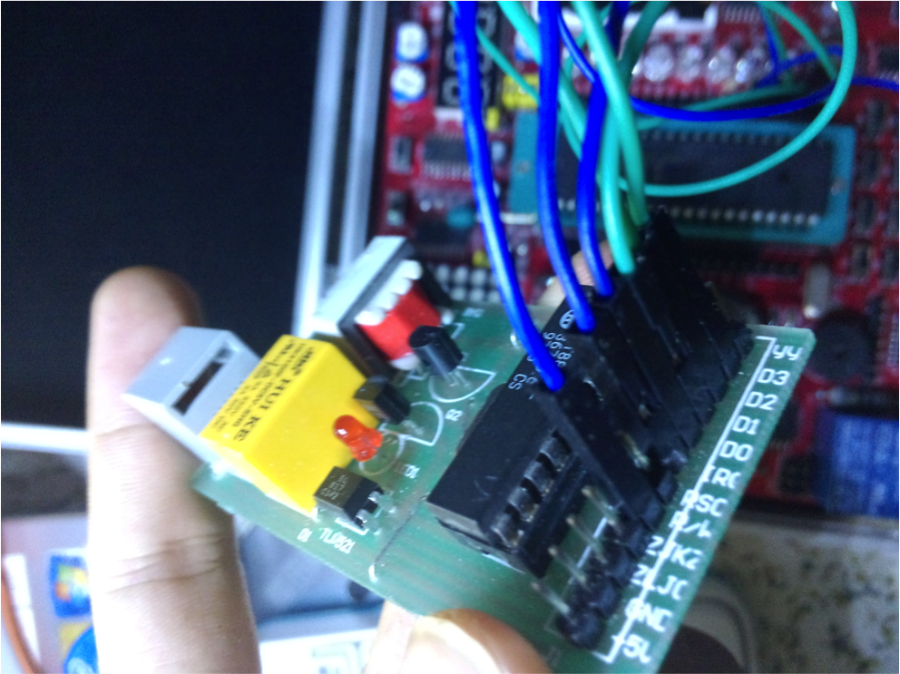
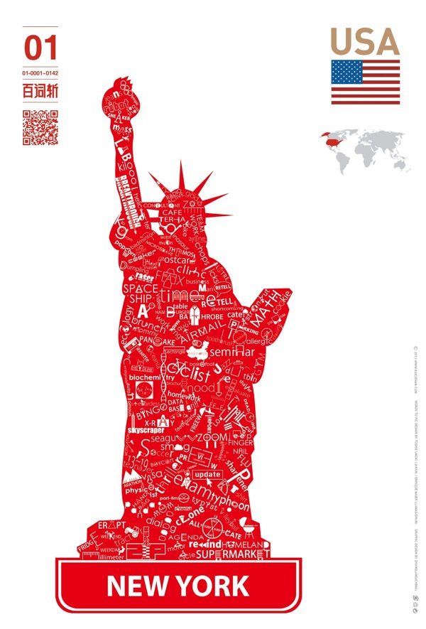

Use MT8880 to Auto dial a phone
This is the MT8880 chip that I use.
What I have done is using the chip MT8880 to dial a phone number, actually it is a part of a home security system that calls one's phone to warn the preson of the danger at his home.
The MT8880 is a dual-tone, multi-frequency (DTMF) transceiver on a chip. It can be configured to send or receive “touch” tones used in many phone and radio communication systems.
I implement this using C language.
Reversible Data Embedding
Embed data into a picture reversibly using difference expansion (interger wavelet transform) with MATLAB, see on github.
Words Filling
This is a script that I have done in Python to ease some manual work to fill words in a picture, see on github.
| Generated Picture: | Manually made picture: |
|  |
Websites
I'm a learner of Ruby on Rails and worked on my spare time for a company named Yankeji to develop their website. (It's simple still^^, but almost on my own). You can see it through the link http://yankeji-test.herokuapp.com/, this is a little bit slow because it was hosted on heroku.
My own blog is named WildFlame, see through http://www.wildflame.org, on the same domain of this page.